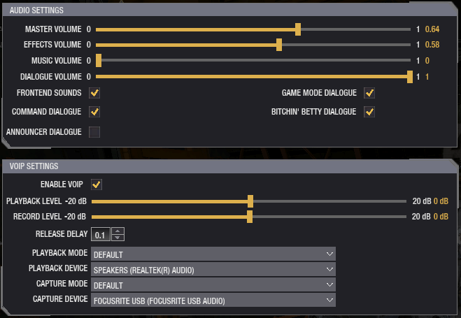
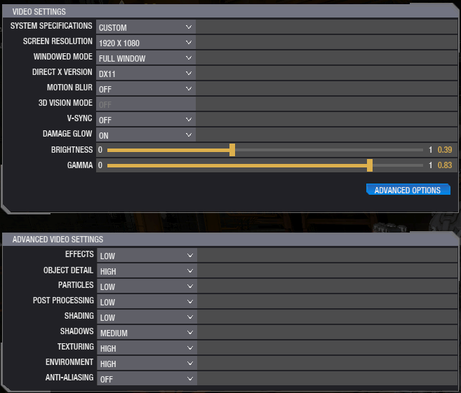

Ingame Settings
Game

| Setting | Value | Explanation |
|---|---|---|
| Arm Lock | Preference | This is based on your arm lock style |
| Throttle Decay | Preference | This is dependent on your playstyle |
| Start in Third Person | Disabled | 3rd-person has severe issues with aiming |
| Directional Arrow | Enabled | Useful info at minimal FPS cost |
| Enable Cockpit Glass | Disabled | Obstructing view while also costing FPS |
| Enable Cockpit Monitors | Disabled | Ego measure at the cost of FPS |
| First Person FOV | Preference | Higher values cost some FPS |
| Sensitivity | Preference | For info on picking your sensitivity, refer to this |
| Smooth | 0 | We want the true mouse input to build muscle memory |
| Acceleration | 0 | We want the true mouse input to build muscle memory |
| Invert Mouse Axis | Disabled | Inverting mouse input would prevent muscle memory |
| Color Blind Friendly Reticule | Preference | Adds extra lines to the crosshair when hitting something |
Audio

All these settings are up to personal preference. Just make sure VOIP is enabled.
Video

| Setting | Value | Explanation |
|---|---|---|
| Screen Resolution | Preference | Set this to your screen's resolution, non-16:9 causes issues |
| Windowed Mode | Full Window | Fullscreen causes crashes, this also enables you to alt-tab easier |
| Direct X Version | DX11 | DX11 is the newer and faster standard, supported on most systems |
| Motion Blur | Off | *** motion blur. |
| 3D Vision Mode | Off | Unless you have 3D glasses, leave it off |
| V-Sync | Off | Tearing is way better than stuttering for competitive gaming |
| Damage Glow | On | Shows you where your lasers hit, doesn't cost too many frames |
| Brightness & Gamma | Preference | Completely based on your monitor, find what lets you see best |
| Effects | Low |